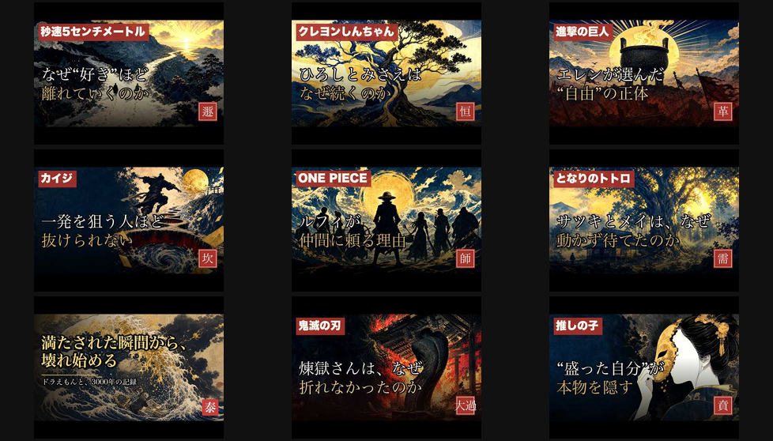
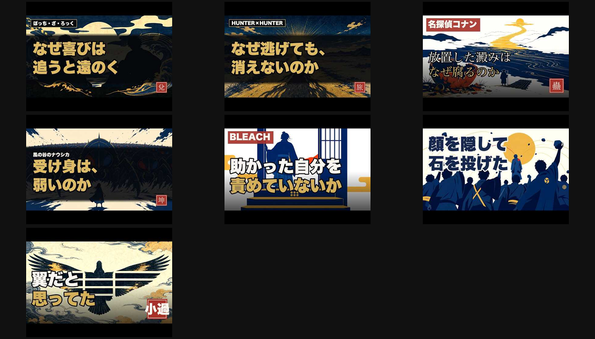
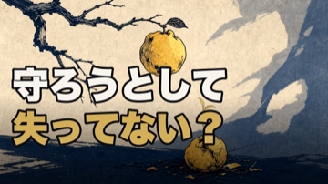

HaQei / アニメと易経 ・ サムネ傾向分析＋差別化
ep42 サムネ — 「伸び悩み」の一次情報分析と差別化3案
全39本のライブサムネ（YouTubeから取得＝視聴者が実際に見ているもの）を CTR/再生でソートして比較。
核心：直近サムネが「暗い・空虚」へドリフト＝伸び悩みと相関
よく再生されている／CTR上位（勝ち組）の傾向：明るい金・暖色光／情報量の多い構図／高コントラスト／認識できる情景・シルエット。問い型コピー。

CTR上位9（秒速2.6% クレしん2.5% 進撃2.3% カイジ1.9% ONE PIECE1.8% トトロ1.7% ドラえもん1.6% 鬼滅1.6% 推しの子1.6%）＝夕焼け・金・crew silhouette・顔など明るく強い
直近アップ（ep33-40）の傾向：暗い紺/黒地＋小さな遠いシルエット＋余白過多＋寒色＝のっぺり暗い。CTR 0.6%台が並ぶ。

直近（ぼざろ・HxH・コナン・ナウシカ・BLEACH・コードギアス・小過）＝暗く空虚・焦点が弱い
結論：オーナーの直感どおり。全部が同じ「暗い抽象＋余白」テンプレに収束し、暗く弱くなっていた。ep42は勝ち組パターン（明るい暖色・強い金の焦点・高コントラスト）へ寄せて意図的に差別化する。
ep42 差別化3案（すべてタグなし＝タイトル重複回避）
現行案（不採用寄り）: 暗いシルエット

V_06_02ベース。生成り地は明るいが、主役が暗い後ろ姿＋魔女の影で直近の「暗い・不穏」パターンに寄っている。差別化の観点では弱い。
A案（推奨）: 金グロー＋金の果実（碩果）

V_05_06ベース。暖色の金グロー＋金の果実の焦点＋高コントラスト＝勝ち組（秒速・カイジの金）に一致。剝の「最後に残る一果＝碩果不食」を主役化＝テーマ的にも正確。明るく目を引く。
B案: 金の果実＋芽（穏やか）

V_03_04ベース。金の果実＋芽吹き＝希望。現行より明るいが、グロー/ドラマはA案より穏やか。
ご判断ください：A（金グロー・推奨） ／ B（金の果実＋芽） ／ 現行の暗い版でよい ／ コピー変更。
選ばれた版を
選ばれた版を
releases/062/thumbnail.png に採用。※さらに踏み込むなら、今後の本編は「明るい暖色・強い焦点」を新サムネ基準に格上げして直近の暗いドリフトを是正できます（H42の再起動）。一次情報＝YouTubeライブサムネ39本（i.ytimg.com）＋ analytics/ctr-summary.json（CTR 28日窓）＋ _long-detail.json（再生）。生成＝make-thumbnail-tierA.py。